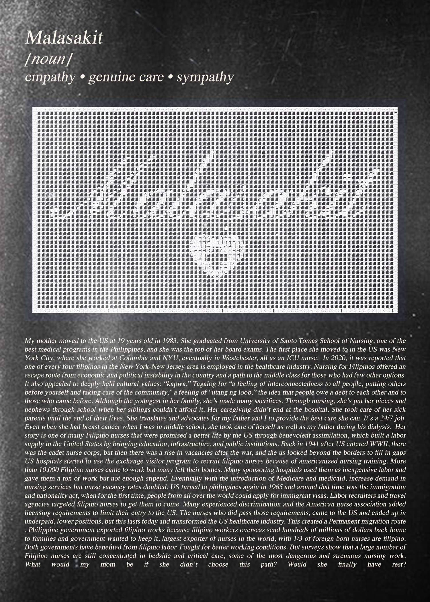

Search Index
2025 - Data Viz - P5.js
A scrollytelling experience exploring how people seek care in the age of algorithms
2025 - Data Viz - P5.js
A scrollytelling experience exploring how people seek care in the age of algorithms

2026 - Installation - Receipt Printer, TouchDesigner, Raspberry Pi
How does surveillance capitalism affect community?
.webp)
2024 - Zine - InDesign, Risograph
What happens to our data after we die and how has grief changed with technology?

2026 - Data Viz - Acrylic, Lasercut
How can the unpaid labor of caregiving be visualized?

In progress with my MFA Design and Technology Thesis, I'm currently exploring the double extraction of care as labor through the lens of my family archives
.png)
Sensorial web experience connecting my patient experience to strangers on Reddit using AI/ML

Would she finally have rest?

A workshop/exhibition for Parsons' Visibilize-ing Care Festival 2026
.png)
Personal summer challenge

A welcome kit for landlords to showcase the value of renting spaces to artists